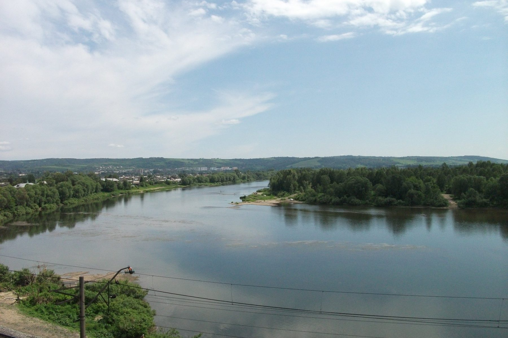

Скважины в Осинниках: отчего вода у соседей разная
Две скважины на соседних участках вскрывают разные горизонты — и вода из них отличается по железу, жёсткости и стабильности. Разбираем этот случай и объясняем, что выбирает горизонт за вас.
Два соседних участка в Осинниках, забор в забор. У одного хозяина вода из скважины мягкая и почти без запаха, у другого — с рыжеватым оттенком, жёсткая, и чайник за полгода покрывается накипью. Расстояние между скважинами — двадцать метров. Первая мысль — «нам не повезло с подрядчиком» или «сосед где-то нашёл водоносный слой получше». На деле дело не в везении и не в выборе подрядчика, а в том, какой горизонт вскрыла каждая из скважин, — а это решает не заказчик и не бурильщик по своему желанию.

Фото: Verdi, общественное достояние, Викисклад. Кадрировано.Кто выбирает горизонт при проходке
Когда бурение доходит до первого пласта, способного отдавать воду, решение не сводится к простому «дошли — остановились». Инженер оценивает пройденный разрез по нескольким признакам сразу: устойчивость и характер породы, момент, когда порода начинает отдавать воду, и то, насколько стабилен приток при пробной прокачке. Разные горизонты на одном и том же участке могут отличаться дебитом, характером породы вокруг фильтра и природным составом воды — и цель бурения не «дойти до самого нижнего», а вскрыть горизонт, который даёт достаточный и стабильный приток при разумной глубине.
Отсюда следует контринтуитивный факт: более глубокая скважина не обязательно означает воду лучше. Иногда неглубокий горизонт на конкретном участке оказывается вполне продуктивным и стабильным, и бурить дальше просто нет смысла — это увеличивает стоимость работ без выигрыша в качестве. В другом случае верхний горизонт оказывается маломощным или ненадёжным по притоку, и инженер продолжает проходку до более глубокого и предсказуемого пласта. То, какой из этих сценариев реализуется на конкретном участке, определяет геологический разрез именно этого места — а он, как показывает пример с соседними скважинами, может ощутимо различаться даже на расстоянии в двадцать метров: линзы и локальные особенности напластования не обязаны повторяться от участка к участку в точности.
Общая картина того, какие толщи залегают на юге Кузбасса и почему глубина везде разная, разобрана отдельно и не пересказывается здесь заново: на какую глубину бурить на юге Кузбасса. Осинники лежат в пределах Кузнецкого межгорного артезианского бассейна — того же геологического блока, что и большинство городов юга области, — и локальные различия между соседними участками возникают внутри этой общей картины, а не вопреки ей.
Изоляция верхних горизонтов — не формальность, а причина разницы
Помимо самого выбора горизонта, на итоговое качество воды напрямую влияет то, как построена скважина вокруг вскрытого пласта. Верхние водоносные слои — как правило, более уязвимые для загрязнения с поверхности и часто менее стабильные по составу — должны быть надёжно изолированы от рабочего горизонта, из которого фактически забирается вода. Эту роль выполняет обсадная колонна вместе с затрубным пространством: зазор между стенкой скважины и колонной, который при качественном монтаже не остаётся открытым каналом, а перекрывается так, чтобы вода из верхних, часто менее качественных горизонтов не подмешивалась к воде из целевого пласта ниже.
Если изоляция выполнена аккуратно, вода в скважине соответствует химическому составу именно того горизонта, который был выбран целью бурения. Если затрубное пространство герметизировано небрежно или не на всю нужную глубину, в скважину может подмешиваться вода из верхних слоёв — и тогда состав воды на выходе окажется не тем, что должен быть по паспорту горизонта, а смесью, которая может быть хуже любого из исходных слоёв по отдельности. На практике это и есть одна из частых причин, почему две скважины, формально попавшие в один и тот же нижний горизонт, всё равно дают разную воду: конструктивное качество изоляции не менее важно, чем сам факт выбора пласта.
Отсюда практический вывод, о котором заказчик обычно не задумывается до момента, пока разница в воде не станет заметной на собственном участке: качество готовой скважины определяется не только тем, докуда дошло бурение, но и тем, насколько аккуратно выполнен монтаж обсадной колонны и герметизация затрубного пространства на каждом пройденном метре, а не только в самой нижней, рабочей части ствола.
Что именно создаёт разницу в качестве
У подземных вод юга Кузбасса есть общий природный фон: повышенное содержание железа и марганца, повышенная жёсткость и дефицит фтора — эти особенности подтверждены региональным докладом о состоянии подземных вод и характерны не только для Осинников, а для территории в целом. Но фон — это диапазон, а не одна фиксированная цифра, и то, насколько конкретная скважина укладывается в его верхнюю или нижнюю часть, зависит от вскрытого горизонта и локальной геологии участка.
Железо в подземной воде даёт характерный рыжеватый оттенок и осадок при контакте с воздухом — именно на него обычно жалуются первым, потому что он заметен визуально. Жёсткость проявляется не так наглядно, зато накопительно: накипь на нагревательных элементах, ощущение «мыла, которое плохо смывается». Оба показателя способны заметно отличаться даже на соседних участках именно потому, что зависят от конкретного пройденного пласта и его минерального состава, а не только от общей принадлежности территории к одному гидрогеологическому блоку.
Здесь стоит быть точным в формулировках, не называя конкретные пороговые цифры без сверки по первоисточнику: действующие гигиенические нормативы качества питьевой воды устанавливает СанПиН 1.2.3685-21, и то, укладывается ли вода из конкретной скважины в эти нормативы по железу, жёсткости или другим показателям, — вопрос, на который отвечает не общее знание о регионе, а лабораторный анализ пробы именно с этого участка. Какие показатели стоит проверять и в какой момент — разобрано отдельно: анализ воды из скважины.
Можно ли исправить уже готовую скважину
Если вода из уже пробуренной скважины оказалась хуже, чем хотелось, изменить сам вскрытый горизонт задним числом нельзя — перебурить скважину «поглубже» в рамках уже смонтированной конструкции не получится, это фактически означает новую скважину. Но это не значит, что с ситуацией нельзя ничего сделать.
Первый шаг — понять, в чём именно причина: в природном составе воды самого горизонта или в том, что изоляция верхних слоёв работает не так, как должна, и вода на выходе — смесь нескольких пластов. Первое устанавливается анализом воды и сопоставлением с известными характеристиками горизонта в этом районе; второе — оценкой состояния оголовка и герметичности конструкции. Если причина в изоляции, есть шанс исправить это на месте, не бурясь заново. Если причина в природном составе конкретного горизонта, разумный путь — не повторное бурение наугад, а подбор оборудования для очистки воды под конкретный, уже известный по анализу состав: обезжелезивание, умягчение или другая технология в зависимости от того, что именно превышает норму.
Похожая ситуация — разница в геологии и воде между несколькими соседними площадками одного района — разобрана на другом примере, с другим набором локальных факторов, в статье про Беловский район: грунты и вода в Беловском районе. Как устроена скважина изнутри, включая обсадную колонну и затрубное пространство, о которых шла речь выше, — подробно, по узлам: как устроена скважина на воду. А если разница в воде у соседей вызывает сомнения именно у вас и нужна оценка конкретного участка перед бурением — с этого стоит начинать заказ бурения скважины на воду.